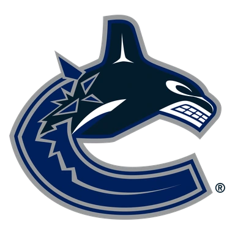
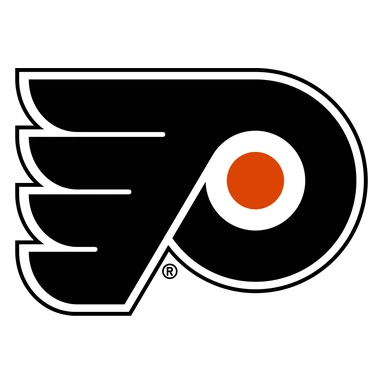

Торонто — Миннесота итог матча 13 ноября
Статистика матча
- 28Броски в створ26
- 0 из 2Голы в большинстве1 из 3
- 6Штрафные минуты4
- 61 %Выигранные вбрасывания39 %
- 21Силовые приёмы23
- 18Блокированные броски21
- 1Отборы5
- 14Потери16
Удаления по минутам 5
- 1-й период
- Blake ColemanПодножка2 мин
- Quinn HughesПодножка2 мин
- Ryan TverbergБлокировка2 мин
- 2-й период
- Darren RaddyshТолчок клюшкой2 мин
- 3-й период
- Darren RaddyshИгра высоко поднятой клюшкой2 мин
Данные лиги.
- ТурнирНХЛ
Коротко о матче
Торонто — Миннесота 2:5: гости победили.
Главное перед игрой — серия: Торонто — 4 поражения подряд. По форме разница была заметной: в пяти последних матчах Миннесота — 4 победы, Торонто — 1 победа. Слабое место — оборона: Торонто — в среднем 3,8 пропущенной шайбы за игру в этих пяти матчах.
Обе команды играют результативно: больше 5,5 шайб набиралось в 11 из 16 их последних матчей. Стоит учесть и площадку: дома Торонто — 3 победы в 10 матчах, на выезде Миннесота — 7 побед в 10. До этого команды встречались 16 марта 2026 года: Миннесота — Торонто 2:4.
Форма: последние матчи
 Торонто 1 победа из 5
Торонто 1 победа из 5

В4:2 П2:3
П2:3 П2:4
П2:4 П0:4
П0:4 П3:6
П3:6
 Миннесота 4 победы из 5
Миннесота 4 победы из 5
 В5:1
В5:1
В4:2 В4:1
В4:1 П3:4
П3:4- В2:1
Личные встречи
- Миннесота2:4Торонто
- Торонто3:6Миннесота
- Торонто1:3Миннесота
- Миннесота2:1ОТТоронто
Положение в таблице
| Команда | Место | И | В | П | Голы | Очки |
|---|---|---|---|---|---|---|
| 12 | 21 | 8 | 13 | 69:75 | 18 | |
| 1 | 21 | 14 | 7 | 70:46 | 32 |
Куда дальше
Все прогнозы дня — в TelegramПрогнозы на КХЛ, НХЛ и футбол, итоги каждое утро. Бесплатно.
Открыть каналМатериалы носят информационный характер и не гарантируют результат. Реклама букмекеров на сайте не размещается. Сайт только для совершеннолетних (18+).